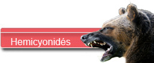
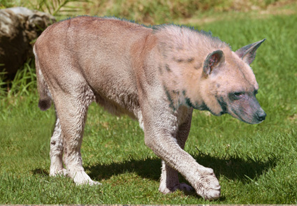
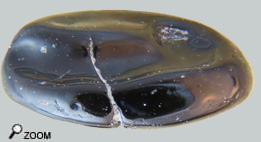
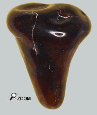

Les hemicyonidaes

Le miocène inférieur est dominé par les carnivores amphicyonidés, couvrant des animaux de la taille d’un chien à celui des gigantesques Amphicyons plus grands qu’un grizzli. Une spécialisation s’opère au sein de famille produisant de nombreuses espèces au point qu’il reste peu d’espace pour les autres carnivores. Malgré tout, un autre groupe finit par émerger : les hémicyonidés, proches parents des ours mais avec une évolution divergente.
 Au lieu de l’allure trapue et massive des ours, elle produit des animaux puissants et rapides plus adaptés à une prédation de poursuite dans des milieux plus ouverts (steppes). Cette spécialisation combinée à une taille parfois importante a dû leur permettre de contester la suprématie des Amphicyons dans certains milieux naturels comme les plaines. Si les Hemicyons sont des animaux apparentés aux ours, ils ont toutefois plus l’allure générale d’un chien. En effet alors que l’ours est plantigrade, l’hémicyon plutôt coureur est semi plantigrade ou digitigrade.
Pour ce qui concerne les faluns, cette famille peut être divisée en 2 :
Les hemicyoninés proprement dit, et les phoberocyonidés comprenant d’abord les Phoberocyons puis les Plithocyons .
Plithocyon se distingue de ses parents proches les phoberocyons par sa dentition. Si phoberocyon au même titre qu'Hemicyon, possède une dentition adaptée au broyage des os, Plithocyon est doté d'un système dentaire propre à lacérer ses proies à la manière des félins.
Un diagnostic difficile
Cette dent est très petite et montre peu de caractères distinctifs. Au moment de sa découverte, je l’ai confondue avec une dent de daurade! C’est pourtant une molaire 3 inférieure ponctiforme qui ressemble beaucoup à celles des hémicyonidés.
 Les Phoberocyons ont des dents très massives et surtout aucune espèce de ce genre n’est assez petite pour se comparer à cette dent.
Il reste alors les genres « Hemicyon » ou « Plithocyon ». Le problème des m3, c’est qu’elles sont peu documentées car peu retrouvées. Toutefois on sait que les hémicyons ont des m3 plutôt circulaires alors que les plithocyons ont des m3 assez allongées. Avec sa forme ovale, cette dent se situe exactement entre les 2 formes!
Alors difficile de trancher. Ce que l’on peut dire c’est que, même si cette dent est de taille particulière petite, 2 animaux du miocène inférieur (Mn3) sont de taille compatible avec cette molaire : Hemicyon Gargan et
Plithocyon Bruneti.
Il ne sera pas possible d’aller plus loin dans la détermination. On remarquera que ces 2 espèces ont été décrites à partir de fossiles découverts dans les faluns d’Anjou Touraine, (respectivement Noyant et Pontigné).
Et puis encore la même chose
 Cette seconde dent m’a permis de découvrir qu’en fait cette troisième molaire inférieure avait peu de critères diagnostiques qui puissent permettre de déterminer l’espèce voire le genre de l’animal !
Une fois légèrement usée, on peut facilement assigner cette dent arrière broyeuse à un amphicyonidé ou bien à un hémicyonidé.
Raisonnablement elle appartient à un Hémicyonidé. Et comme pour la dent précédente, on est en droit de penser qu’il s’agit d’Hemicyon Gargan ou bien Plithocyon Bruneti. Il sera très difficile d’aller plus loin dans la détermination. |